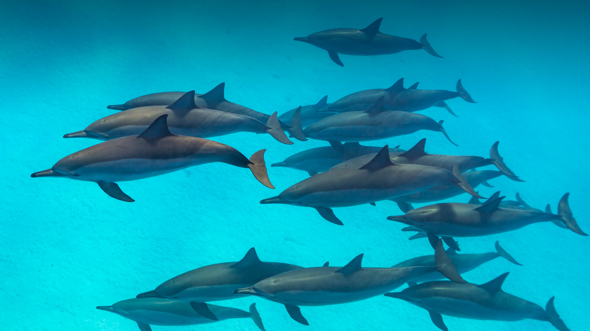

Dolphins
-
Dolphins use echolocation to navigate and hunt. Dolphins emit clicks and whistles that bounce off objects, creating a sound-based "picture" of their surroundings to find prey and other sea life.
-
Dolphins are highly intelligent and social. They form complex social bonds within their "pods," using unique signature whistles to recognize each other and engaging in cooperative hunting and playful behaviors.
-
Killer whales are actually the largest dolphins . Despite the name, orcas belong to the dolphin family and are one of the largest toothed predators in the world.
-
Dolphins sleep with one half of their brain at a time . This allows them to stay alert for predators and to remember to surface for air, ensuring their own survival.
-
Dolphins are highly skilled tool users . Some species have been observed using sponges to protect their beaks while foraging on the seafloor or using empty shells to trap fish.
